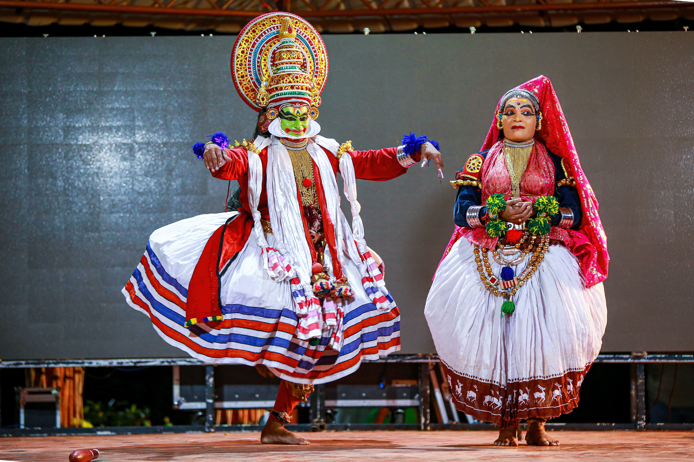
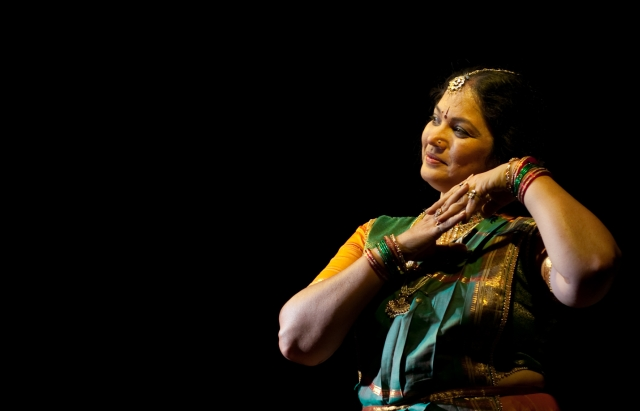
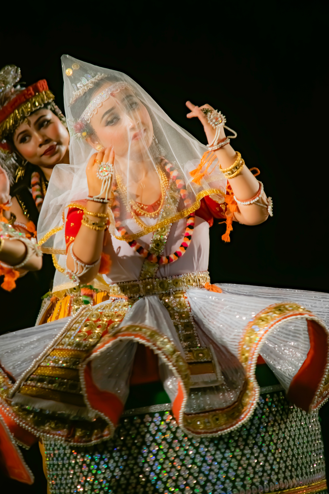
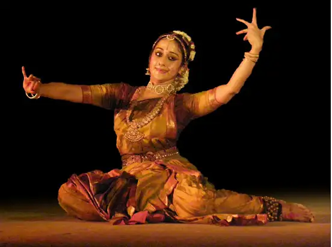
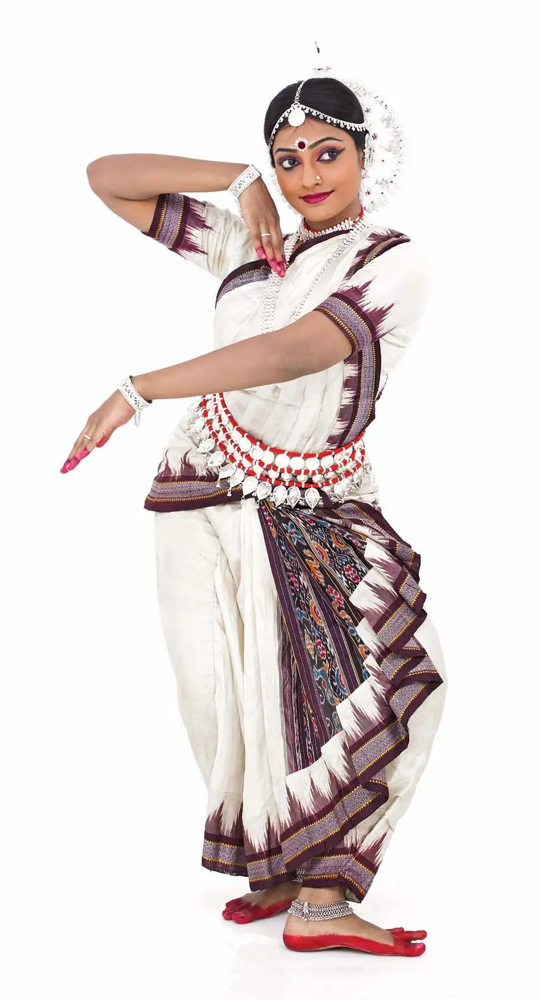
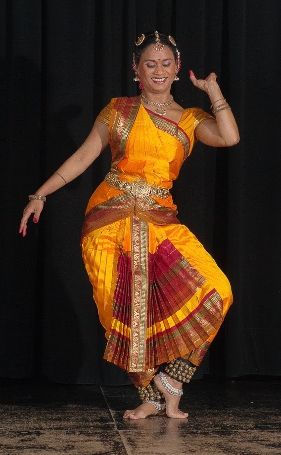

भारत के 6 शास्त्रीय नृत्य
नृत्य भारत में एक प्राचीन और प्रसिद्ध सांस्कृतिक परंपरा है। पूरे देश में लोक नृत्यों की भरमार है, और लोगों की भारी भीड़ त्योहारों और शादियों में नाचती हुई देखी जा सकती है। भारतीय सिनेमा (तथाकथित "बॉलीवुड" फिल्मों) में भी नृत्य और गीत बहुत अधिक हैं। लेकिन भारतीय नृत्य की जड़ें कहां से आती हैं? यहाँ भारत के सबसे महत्वपूर्ण शास्त्रीय नृत्य रूपों में से 6 हैं।
कथकली
 Photo by Jithin muraliकथकली दक्षिण-पश्चिम भारत से केरल राज्य के आसपास आती है। भरतनाट्यम की तरह कथकली भी एक धार्मिक नृत्य है। यह रामायण और शैव परंपराओं की कहानियों से प्रेरणा लेता है। कथकली पारंपरिक रूप से लड़कों और पुरुषों द्वारा की जाती है, यहां तक कि महिला भूमिकाओं के लिए भी। वेशभूषा और श्रृंगार विशेष रूप से विस्तृत हैं, जिसमें चित्रित मुखौटे और विशाल हेडड्रेस जैसे दिखने वाले चेहरे हैं।
कथक
 image:Saurabh Chatterjeeउत्तर भारत का एक नृत्य, कथक अक्सर प्रेम का नृत्य होता है। यह पुरुषों और महिलाओं दोनों द्वारा किया जाता है। आंदोलनों में टखनों के चारों ओर पहनी जाने वाली घंटियों द्वारा उच्चारण जटिल फुटवर्क और सामान्य शरीर की भाषा से अनुकूलित शैली के इशारे शामिल हैं। इसकी शुरुआत कथक, पेशेवर कहानीकार ने की थी, जिन्होंने नृत्य, गीत और नाटक के मिश्रण का इस्तेमाल किया था। अन्य भारतीय नृत्यों की तरह यह एक मंदिर नृत्य के रूप में शुरू हुआ, लेकिन जल्द ही शासक घरों के दरबार में चला गया।
मणिपुरी
 Photo by Kosygin Leishangthemमणिपुरी पूर्वोत्तर भारत में मणिपुर से आता है। इसकी जड़ें उस राज्य की लोक परंपराओं और अनुष्ठानों में हैं, और अक्सर भगवान कृष्ण के जीवन के दृश्यों को दर्शाती हैं। कुछ अन्य, अधिक लयबद्ध नृत्यों के विपरीत, मणिपुरी को सहज और सुंदर आंदोलनों की विशेषता है। महिला भूमिकाएं विशेष रूप से बाहों और हाथों में तरल होती हैं, जबकि पुरुष भूमिकाओं में अधिक सशक्त गति होती है। नृत्य के साथ कथा जप और कोरल गायन किया जा सकता है।
कुचिपुड़ी
 image:Vasanthakumarepउल्लिखित अन्य शैलियों के विपरीत, कुचिपुड़ी को नृत्य और गायन दोनों में प्रतिभा की आवश्यकता होती है। यह नृत्य, दक्षिणपूर्वी भारत में आंध्र प्रदेश राज्य से, औपचारिक रूप से गीत-नृत्य परिचय, पवित्र जल का छिड़काव, और धूप जलाने के साथ-साथ देवी-देवताओं के आह्वान के साथ अत्यधिक अनुष्ठान किया जाता है। परंपरागत रूप से यह नृत्य पुरुषों द्वारा किया जाता था, यहां तक कि महिलाओं द्वारा भी, हालांकि अब यह मुख्य रूप से महिलाओं द्वारा किया जाता है।
ओडिसी
 image:© GAMUT STOCK IMAGES/Fotoliaओडिसी पूर्वी भारत में उड़ीसा के लिए स्वदेशी है। यह मुख्य रूप से महिलाओं के लिए एक नृत्य है, जिसमें ऐसी मुद्राएं होती हैं जो मंदिर की मूर्तियों में पाए जाने वाले आसनों की नकल करती हैं। पुरातात्विक निष्कर्षों के आधार पर, ओडिसी को जीवित भारतीय शास्त्रीय नृत्यों में सबसे पुराना माना जाता है। ओडिसी एक बहुत ही जटिल और अभिव्यंजक नृत्य है, जिसमें आमतौर पर पचास से अधिक मुद्राएं (प्रतीकात्मक हाथ के इशारे) का उपयोग किया जाता है।
भरतनाट्यम
भरतनाट्यम दक्षिण भारत में तमिलनाडु का एक नृत्य है। यह पौराणिक पुजारी भरत द्वारा लिखित रंगमंच पर एक प्राचीन ग्रंथ नाट्यशास्त्र में अपनी उत्पत्ति का पता लगाता है। मूल रूप से महिलाओं के लिए एक मंदिर नृत्य, भरतनाट्यम का उपयोग अक्सर हिंदू धार्मिक कहानियों और भक्ति को व्यक्त करने के लिए किया जाता है। यह आमतौर पर 20 वीं शताब्दी तक सार्वजनिक मंच पर नहीं देखा गया था। नृत्य आंदोलनों को मुड़े हुए पैरों की विशेषता होती है, जबकि पैर ताल बनाए रखते हैं। एक कहानी बताने के लिए हाथों का इस्तेमाल मुद्राओं की एक श्रृंखला, या प्रतीकात्मक हाथ के इशारों में किया जा सकता है।